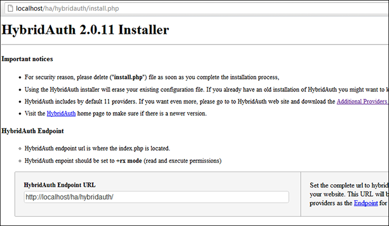
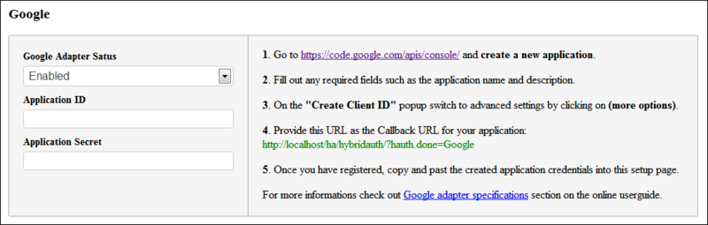
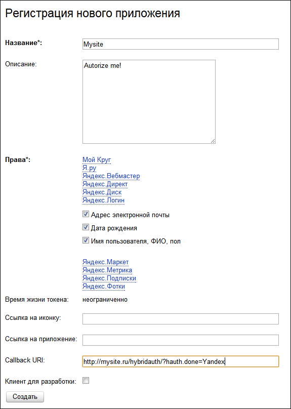
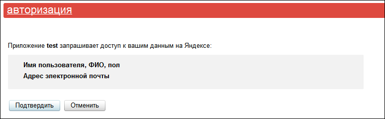
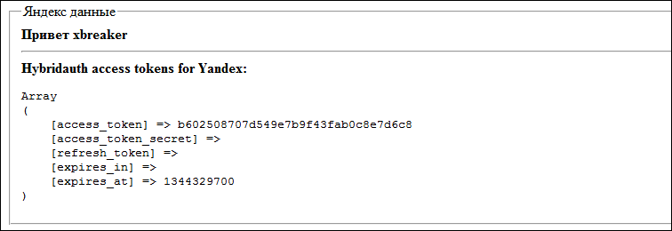

HybridAuth — интеграция сайта с социальными сетями
На своем сайте на php для авторизации пользователей я в последнее время пользовался сервисом Loginza. Все было очень круто и удобно, но в голове начала зарождаться идея отказа от этого замечательного сервиса и вот почему:
Встал вопрос замены и использовать альтернативные сервисы желания уже не возникало — никто не представлял возможности «общаться» с соц. сетью напрямую, а расширенные поля профиля обычно включались в платные услуги. Хотелось автономного решения с возможностью гибкой настройки запрашиваемых полей и в итоге я остановился на php библиотеке HybridAuth.
HybridAuth
HybridAuth — библиотека с открытым исходным кодом, которая позволяет использовать авторизацию с использованием OAuth1, OAuth2 и OpenID. В составе библиотеки уже идут настройки для большинства популярных соц. сетей, таких как Google, Facebook, Twitter, и есть даже ВКонтакте. Текущая стабильная версия 2.0.11, версия в разработке 2.1.0 — ссылки на github есть в конце статьи. Распространяется по лицензиям MIT и GPL, подробнее об этом можно прочитать здесь (http://hybridauth.sourceforge.net/licenses.html).
В состав библиотеки включены примеры использования и набор наиболее популярных сервисов авторизации. Рассмотрим пример авторизации через Twitter, для этого возьмем последнюю стабильную версию и установим ее на локальном сервере. Все примеры находятся в каталоге examples, настройки сервисов в hybridauth/config.php, там же находится install.php, который поможет нам создать файл настроек автоматически, откроем его:

Для начала нам необходимо указать Endpoint URL — полный путь к корневому каталогу плагина, он используется некоторыми сервисами для возрата на ваш сайт. Далее идут настройки всех сервисов авторизации, а так же инструкции по получению ID и Secret:

Для нашего примера создадим приложение в Twitter. После этого внесем их в настройки нашей библиотеки и сохраним. Теперь рассмотрим пример авторизации, создадим в корне сайта файл test.php:
<?php
session_start();
$config = dirname(__FILE__) . '/hybridauth/config.php';
require_once( "hybridauth/Hybrid/Auth.php" );
if( isset( $_GET["login"] ) ) {
try {
$hybridauth = new Hybrid_Auth( $config );
$adapter = $hybridauth->authenticate( "twitter" );
$user_profile = $adapter->getUserProfile();
} catch( Exception $e ) {
die( "<b>got an error!</b> " . $e->getMessage() );
}
}
if( ! isset( $user_profile ) ) {
?>
<p>Нажмите Войти для авторизации.</p>
<h2><a href ="test.php?login=1">Войти</a></h2>
<?php
} else {
?>
<fieldset>
<legend>twitter данные</legend>
<b>Привет <?php echo $user_profile->displayName; ?></b>
<hr />
<b>Hybridauth access tokens for twitter:</b>
<pre><?php print_r( $adapter->getAccessToken() ); ?></pre>
</fieldset>
<?php
}
?>
Рассмотрим, что он делает:
Все очень просто! Теперь, посмотрим какие именно данные получает getUserProfile в случае с Twitter. Для этого откроем каталог hybridauth/Hybrid/Providers, где в виде файлов хранятся настройки сервисов авторизации, нам нужен Twitter.php. Находим метод getUserProfile и видим получаемые данные:
$this->user->profile->identifier = (property_exists($response,'id'))?$response->id:"";
$this->user->profile->displayName = (property_exists($response,'screen_name'))?$response->screen_name:"";
$this->user->profile->description = (property_exists($response,'description'))?$response->description:"";
$this->user->profile->firstName = (property_exists($response,'name'))?$response->name:"";
$this->user->profile->photoURL = (property_exists($response,'profile_image_url'))?$response->profile_image_url:"";
$this->user->profile->profileURL = (property_exists($response,'screen_name'))?("http://twitter.com/".$response->screen_name):"";
$this->user->profile->webSiteURL = (property_exists($response,'url'))?$response->url:"";
$this->user->profile->region = (property_exists($response,'location'))?$response->location:"";
Можно поменять любые данные или добавить свои, так же в этом файле реализованы методы получения контактов профиля и изменения статуса. То есть при необходимости для любой социальной сети можно не только изменить набор необходимых данных, но и дописать свой функционал на основе их API.
Яндекс
В качестве примера добавления нового сервиса авторизации, попробуем добавить Яндекс, для этого создадим hybridauth/Hybrid/Providers/Yandex.php. Яндекс использует OAuth2 для авторизации, поэтому наш класс будет наследовать его:
class Hybrid_Providers_Yandex extends Hybrid_Provider_Model_OAuth2
Для OAuth1 нужно использовать Hybrid_Provider_Model_OAuth1, а для OpenID — Hybrid_Provider_Model_OpenID. Теперь нам необходимо разобраться какие данные нужны Яндексу для авторизации пользователя и доступу к данным его профиля. Сначала создадим приложение Яндекс API, для получения ID и Secret полей — заходим сюда и регистрируем новое приложение. Для получения данных профиля будем использовать API Логин.Яндекс, где отметим поля почтового ящика и ФИО пользователя.
Пример заполнения данных

У нас есть необходимые ключи, осталось внести их в настройки HybridAuth, открываем hybridauth/config.php и в конец добавляем:
"Yandex" => array ( "enabled" => true, "keys" => array ( "id" => "Id приложения", "secret" => "Пароль приложения" ) ),
Далее читаем документацию Яндекса (http://api.yandex.ru/oauth/doc/dg/reference/obtain-access-token.xml) и видим, что для авторизации нам необходимо обращаться к https://oauth.yandex.ru/authorize, а для получения токена к https://oauth.yandex.ru/token. Осталось узнать адрес API Логин.Яндекс — для этого открываем документацию API и находим Вход через Яндекс, а там OAuth + Яндекс.Логин. Тут находим, что для получения информации о пользователе нужно обращаться к https://login.yandex.ru/info. Отлично, все необходимое у нас есть, возвращаемся к Yandex.php, в функции initialize указываем ссылки на API:
$this->api->api_base_url = "https://login.yandex.ru/info";
$this->api->authorize_url = "https://oauth.yandex.ru/authorize";
$this->api->token_url = "https://oauth.yandex.ru/token";
Так же укажем, что полученный токен необходимо передавать параметром oauth_token:
$this->api->sign_token_name = "oauth_token";
Теперь в функции getProfiles напишем разбор данных, для начала сформируем запрос на получения профиля:
$response = $this->api->api( "?format=json" );
Сейчас мы имеем объект $response, который содержит в себе все полученные данные, сохраним их по аналогии с Twitter.php:
$this->user->profile->identifier = (property_exists($response,'id'))?$response->id:"";
$this->user->profile->firstName = (property_exists($response,'real_name'))?$response->real_name:"";
$this->user->profile->displayName = (property_exists($response,'display_name'))?$response->display_name:"";
$this->user->profile->photoURL = 'http://upics.yandex.net/'. $this->user->profile->identifier .'/normal';
$this->user->profile->gender = (property_exists($response,'sex'))?$response->sex:"";
$this->user->profile->email = (property_exists($response,'default_email'))?$response->default_email:"";
$this->user->profile->emailVerified = (property_exists($response,'default_email'))?$response->default_email:"";
В итоге мы получили вот такой файл:
Yandex.php
<?php
class Hybrid_Providers_Yandex extends Hybrid_Provider_Model_OAuth2 {
function initialize() {
parent::initialize();
$this->api->api_base_url = "https://login.yandex.ru/info";
$this->api->authorize_url = "https://oauth.yandex.ru/authorize";
$this->api->token_url = "https://oauth.yandex.ru/token";
$this->api->sign_token_name = "oauth_token";
}
function getUserProfile() {
$response = $this->api->api( "?format=json" );
if ( !isset( $response->id ) ) {
throw new Exception( "User profile request failed! {$this->providerId} returned an invalide response.", 6 );
}
$this->user->profile->identifier = (property_exists($response,'id'))?$response->id:"";
$this->user->profile->firstName = (property_exists($response,'real_name'))?$response->real_name:"";
$this->user->profile->displayName = (property_exists($response,'display_name'))?$response->display_name:"";
$this->user->profile->photoURL = 'http://upics.yandex.net/'. $this->user->profile->identifier .'/normal';
$this->user->profile->gender = (property_exists($response,'sex'))?$response->sex:"";
$this->user->profile->email = (property_exists($response,'default_email'))?$response->default_email:"";
$this->user->profile->emailVerified = (property_exists($response,'default_email'))?$response->default_email:"";
return $this->user->profile;
}
}
?>
Изменим наш пример с Twitter на Яндекс:
$adapter = $hybridauth->authenticate( "yandex" );
Пробуем авторизоваться:

И в итоге получаем:

Вот и все, авторизация через Яндекс прошла успешно. Можно заняться подключением остальных сервисов, которые нам необходимы.
Удобное подключение, простое добавление новых сервисов и открытый исходный код — все то, чего не хватало при работе со сторонними сервисами. Так же, для упрощения интеграции, библиотека имеет плагины к популярным фреймворкам и CMS, таким как Yii, Symfony2, Wordpress, Drupal и другие.
По поводу ошибок и неточностей, а так же с дополнениями просьба обращаться в личку.
Ссылки по теме:
Страница библиотеки на sourceforge (http://hybridauth.sourceforge.net/index.html)
Страница загрузки библиотеки и плагинов (http://hybridauth.sourceforge.net/download.html)
Страница проекта на GitHub (https://github.com/hybridauth/hybridauth)
Мой форк проекта на GitHub (https://github.com/xbreaker/hybridauth)
Онлайн-демо авторизации (http://oyanix.com/opensource/hybridauth/)
upd: выложил авторизацию для Яндекса и Mail.ru, Одноклассники получились с костылем для совместимости с PHP > 5.3.0.